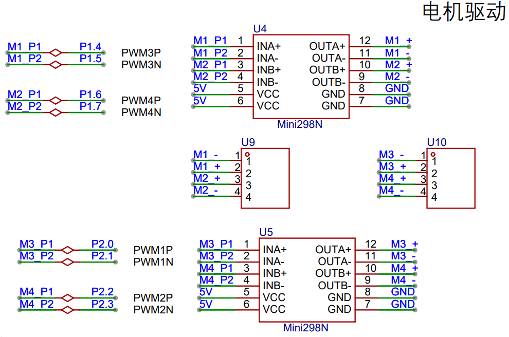
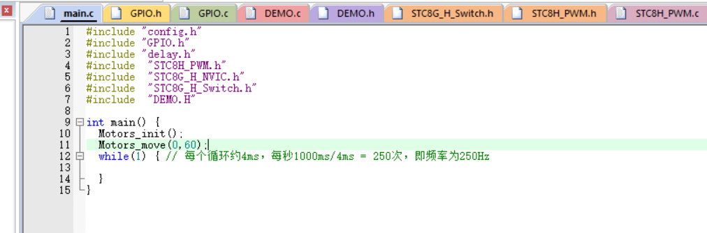
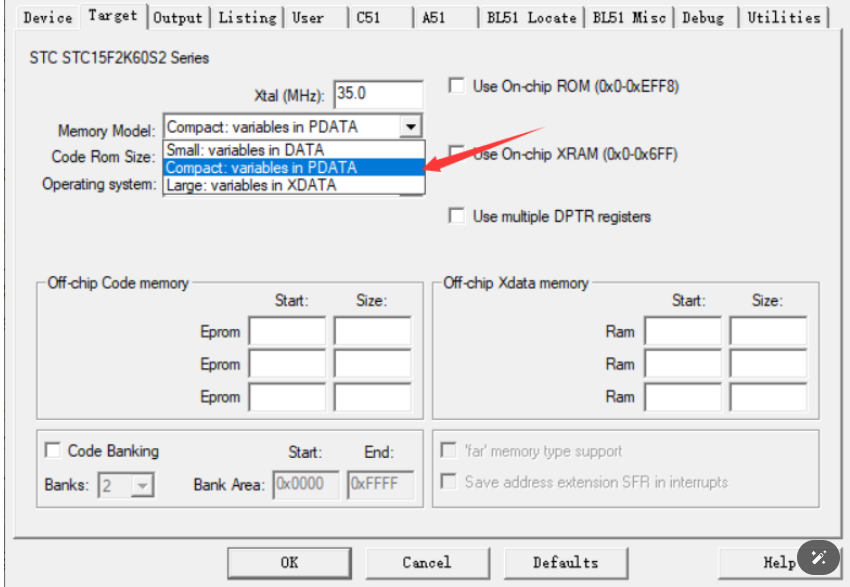

<!DOCTYPE lake>
<h3 data-lake-id="uSRtW" id="uSRtW"><span data-lake-id="u02e4d33f" id="u02e4d33f">原理图</span></h3><p data-lake-id="u60c74251" id="u60c74251"></p><h3 data-lake-id="wamrl" id="wamrl"><span data-lake-id="uc7ca5bbc" id="uc7ca5bbc">电机</span></h3><p data-lake-id="ub9105b4d" id="ub9105b4d"><span data-lake-id="u92d40651" id="u92d40651">通电的时候，无论正接还是反接，电机都可以转动，只是转动的方向不同。</span></p><p data-lake-id="u6f920f05" id="u6f920f05"><span data-lake-id="u56c1582f" id="u56c1582f">两个电机分别对应一个电机驱动芯片，通过电机驱动芯片进行驱动电机转动。</span></p><p data-lake-id="u6abbefd2" id="u6abbefd2"><span data-lake-id="uf5f3c399" id="uf5f3c399">电机驱动芯片又是通过两路pwm来控制的。</span></p><h2 data-lake-id="Bb2EU" id="Bb2EU"><span data-lake-id="u0c369fb1" id="u0c369fb1">正反转驱动原理</span></h2><p data-lake-id="u9c09eae8" id="u9c09eae8"><span data-lake-id="ua32fff19" id="ua32fff19">利用单片机的两个PWM通道分别产生占空比互补的PWM方波，分别控制直流电机的两个方向旋转。注意这里使用的单片机自带的相互PWM引脚，你当然也可以选择两个独立的PWM引脚，自行输出相反的PWM方波。</span></p><p data-lake-id="u41379711" id="u41379711"><strong><span data-lake-id="uff4ee3bd" id="uff4ee3bd">分别配置引脚占空比：</span></strong></p><ul list="uc7406985"><li data-lake-id="u1aefcc42" fid="uce0c03de" id="u1aefcc42"><span data-lake-id="ued19b300" id="ued19b300">当PWM1占空比大于PWM2时，电机正转</span></li><li data-lake-id="ued4db399" fid="uce0c03de" id="ued4db399"><span data-lake-id="ub98a58fc" id="ub98a58fc">当PWM2占空比大于PWM1时，电机反转</span></li><li data-lake-id="ue538139a" fid="uce0c03de" id="ue538139a"><span data-lake-id="ude198fde" id="ude198fde">当两个PWM占空比相等时,电机停止</span></li></ul><p data-lake-id="ub313a7b7" id="ub313a7b7"><strong><span data-lake-id="u4eba1e0a" id="u4eba1e0a">互补PWM配置占空比：</span></strong></p><p data-lake-id="u6c157eb2" id="u6c157eb2"><span data-lake-id="uad044a58" id="uad044a58">我们用的是互补PWM，在模式1 (CCMRn_PWM_MODE1)和模式2 (CCMRn_PWM_MODE2)情况下，设置一个PWM占空比，会自动修改两个输出通道（P正极和N负极）的占空比，并且相互相反。进而实现分别配置两个引脚相同的效果。</span></p><p data-lake-id="u8372ed7b" id="u8372ed7b"><span data-lake-id="udcdb3376" id="udcdb3376">由于直流电机的正负极连接，安装方向均有不同。因而要根据每个轮子需要的正反转方向，给每个轮子分别配置MODE模式。以实现用相同占空比参数，控制车轮正转反转，实现前进或后退的目的。</span></p><h3 data-lake-id="Ni2pA" id="Ni2pA"><span data-lake-id="u1e1a50b0" id="u1e1a50b0">代码实现</span></h3><span class="yuque-card-unsupported">[codeblock]</span><span class="yuque-card-unsupported">[codeblock]</span><p data-lake-id="uf680ceee" id="uf680ceee"><span data-lake-id="u2f3b3cfd" id="u2f3b3cfd">main函数中</span></p><p data-lake-id="ueeb0ecf0" id="ueeb0ecf0"></p><p data-lake-id="u5ff3ddad" id="u5ff3ddad"><span data-lake-id="ub526a0e5" id="ub526a0e5">空间溢出错误</span></p><p data-lake-id="u24cd2fce" id="u24cd2fce"></p>